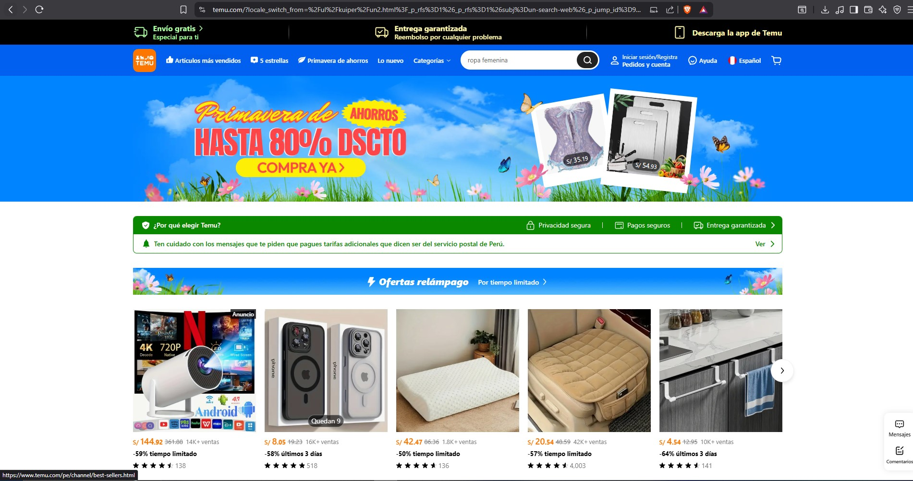

üõ†Ô∏è Mis Proyectos
Aquí muestro ejemplos de proyectos web:
Proyecto 1: Plaza Vea
Un supermercado online con ofertas dinámicas, secciones destacadas y un sistema de carrito virtual. Se trabajó en la estructura responsive para una mejor experiencia móvil.

Proyecto 2: Temu
Un catálogo de productos con descuentos y ofertas relámpago. Se aplicaron técnicas de CSS Grid y animaciones para resaltar banners promocionales y mejorar la interacción.

Proyecto 3: Mercado Libre
Integra búsqueda avanzada, filtros de productos y diseño minimalista. Se buscó destacar la organización por categorías y la usabilidad.